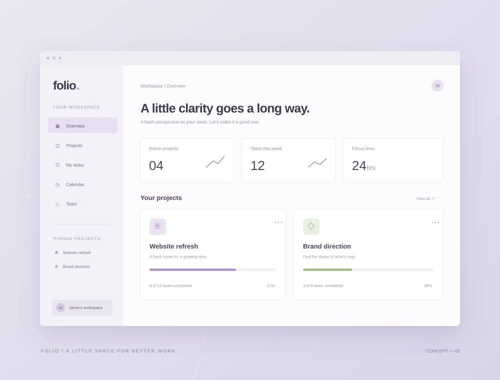

The proof is in the making
A few things
worth sharing.
A collection of independent concepts exploring the intersection of thoughtful design and practical digital experiences.
3 projects

Forma — A quieter kind of commerce.
Brand identity & web design · Independent concept

Folio
Product design & development · Independent concept

Still
Brand & web experience · Independent concept
A note on the work
These self-initiated concepts demonstrate visual direction and design thinking. They are illustrative explorations, with no client affiliations or performance claims.
Your idea could be next
Let’s put good
thinking to work.
Have something you’d like to bring to life? Let’s talk.
Start a conversation